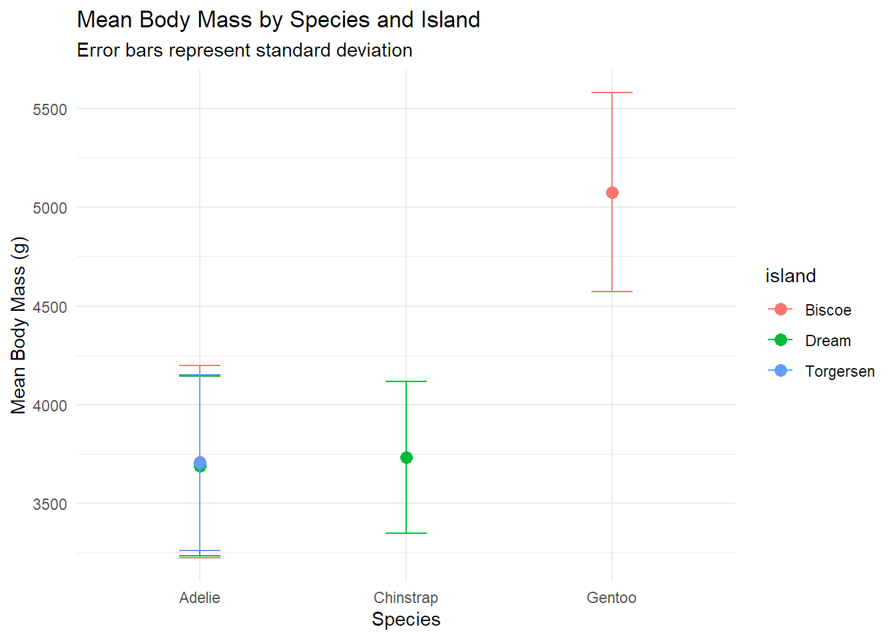
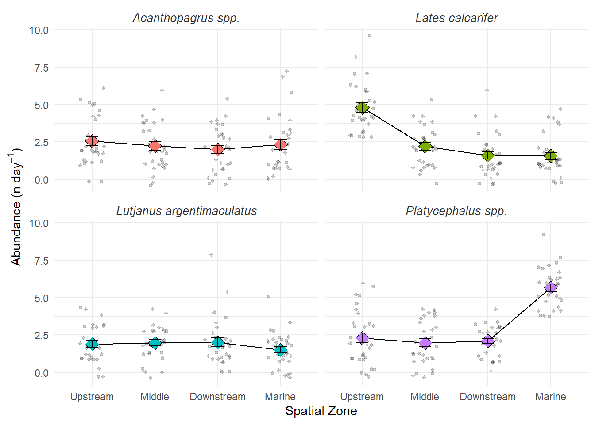

library(tidyverse)
library(readxl)Module 2
Workshop 1
Load the primary data science framework and Excel import library
# Practice Import A: Loading a standard comma-separated plain text file
benthic_cover <- read_csv(here::here("data/workshop1/reef_cover_log.csv"))
# :: loads a package one time. here function indicates that you are working in the project folder
## Practice Import B: Parsing a tab-separated telemetry instrument array string
acoustic_stream <- read_tsv(here::here("data/workshop1/acoustic_telemetry_stream.txt"))
## Practice Import C: Targeting a specific sheet in a multi-tab Excel spreadsheet
fisheries_annual <- read_excel(here::here("data/workshop1/fish_catch_data.xlsx"), sheet = "Commercial_2026")Read in mangrove_data
mangrove_data <- read_csv(file = here::here("data/workshop1/mangrove_survey_raw.csv"))
# has a bunch of notes at the top that will mess up our reading
mangrove_data <- read_csv( here::here("data/workshop1/mangrove_survey_raw.csv"), skip = 5,
# Skip the first 5 lines of field notes
na = c(".", "NA", "9999", "ND", "blank"))
# Convert known text alts to true NATibble vs Data frame
# tibbles are automatically how your data is loaded under tidyverse
# Force a modern tibble to degrade into a legacy base R data frame structure
benthic_cover_df <- as.data.frame(benthic_cover)
# Print the old-style dataframe structure to view
print(benthic_cover_df) site_id transect_no date depth_m hard_coral_pct macroalgae_pct
1 Nelly_Bay 1 2026-05-10 4.5 45.2 12.1
2 Nelly_Bay 2 2026-05-10 5.1 38.5 15.4
3 Geoffrey_Bay 1 2026-05-11 3.8 52.1 8.3
4 Geoffrey_Bay 2 2026-05-11 4.2 48.9 10.2
5 Florence_Bay 1 2026-05-12 6.0 61.3 5.1
6 Florence_Bay 2 2026-05-12 5.8 58.7 6.4
bare_substrate_pct
1 42.7
2 46.1
3 39.6
4 40.9
5 33.6
6 34.9# And compare with tibble alternative
print(benthic_cover)# A tibble: 6 × 7
site_id transect_no date depth_m hard_coral_pct macroalgae_pct
<chr> <dbl> <date> <dbl> <dbl> <dbl>
1 Nelly_Bay 1 2026-05-10 4.5 45.2 12.1
2 Nelly_Bay 2 2026-05-10 5.1 38.5 15.4
3 Geoffrey_Bay 1 2026-05-11 3.8 52.1 8.3
4 Geoffrey_Bay 2 2026-05-11 4.2 48.9 10.2
5 Florence_Bay 1 2026-05-12 6 61.3 5.1
6 Florence_Bay 2 2026-05-12 5.8 58.7 6.4
# ℹ 1 more variable: bare_substrate_pct <dbl>Wrangling with Palmer Penguins
library(palmerpenguins)
data("penguins")
# Examine the structure of the dataset - always do this when loading a new dataset!
glimpse(penguins) # tidyverse version (from dplyr package) Rows: 344
Columns: 8
$ species <fct> Adelie, Adelie, Adelie, Adelie, Adelie, Adelie, Adel…
$ island <fct> Torgersen, Torgersen, Torgersen, Torgersen, Torgerse…
$ bill_length_mm <dbl> 39.1, 39.5, 40.3, NA, 36.7, 39.3, 38.9, 39.2, 34.1, …
$ bill_depth_mm <dbl> 18.7, 17.4, 18.0, NA, 19.3, 20.6, 17.8, 19.6, 18.1, …
$ flipper_length_mm <int> 181, 186, 195, NA, 193, 190, 181, 195, 193, 190, 186…
$ body_mass_g <int> 3750, 3800, 3250, NA, 3450, 3650, 3625, 4675, 3475, …
$ sex <fct> male, female, female, NA, female, male, female, male…
$ year <int> 2007, 2007, 2007, 2007, 2007, 2007, 2007, 2007, 2007…str(penguins) # base R versiontibble [344 × 8] (S3: tbl_df/tbl/data.frame)
$ species : Factor w/ 3 levels "Adelie","Chinstrap",..: 1 1 1 1 1 1 1 1 1 1 ...
$ island : Factor w/ 3 levels "Biscoe","Dream",..: 3 3 3 3 3 3 3 3 3 3 ...
$ bill_length_mm : num [1:344] 39.1 39.5 40.3 NA 36.7 39.3 38.9 39.2 34.1 42 ...
$ bill_depth_mm : num [1:344] 18.7 17.4 18 NA 19.3 20.6 17.8 19.6 18.1 20.2 ...
$ flipper_length_mm: int [1:344] 181 186 195 NA 193 190 181 195 193 190 ...
$ body_mass_g : int [1:344] 3750 3800 3250 NA 3450 3650 3625 4675 3475 4250 ...
$ sex : Factor w/ 2 levels "female","male": 2 1 1 NA 1 2 1 2 NA NA ...
$ year : int [1:344] 2007 2007 2007 2007 2007 2007 2007 2007 2007 2007 ...# Generate an exploratory summary matrix
summary(penguins) species island bill_length_mm bill_depth_mm
Adelie :152 Biscoe :168 Min. :32.10 Min. :13.10
Chinstrap: 68 Dream :124 1st Qu.:39.23 1st Qu.:15.60
Gentoo :124 Torgersen: 52 Median :44.45 Median :17.30
Mean :43.92 Mean :17.15
3rd Qu.:48.50 3rd Qu.:18.70
Max. :59.60 Max. :21.50
NA's :2 NA's :2
flipper_length_mm body_mass_g sex year
Min. :172.0 Min. :2700 female:165 Min. :2007
1st Qu.:190.0 1st Qu.:3550 male :168 1st Qu.:2007
Median :197.0 Median :4050 NA's : 11 Median :2008
Mean :200.9 Mean :4202 Mean :2008
3rd Qu.:213.0 3rd Qu.:4750 3rd Qu.:2009
Max. :231.0 Max. :6300 Max. :2009
NA's :2 NA's :2 Foundational Grammar
# Vertically slice specific morphometric variables by explicit name
morphology_metrics <- select(penguins, species, bill_length_mm, bill_depth_mm, body_mass_g)
glimpse(morphology_metrics)Rows: 344
Columns: 4
$ species <fct> Adelie, Adelie, Adelie, Adelie, Adelie, Adelie, Adelie,…
$ bill_length_mm <dbl> 39.1, 39.5, 40.3, NA, 36.7, 39.3, 38.9, 39.2, 34.1, 42.…
$ bill_depth_mm <dbl> 18.7, 17.4, 18.0, NA, 19.3, 20.6, 17.8, 19.6, 18.1, 20.…
$ body_mass_g <int> 3750, 3800, 3250, NA, 3450, 3650, 3625, 4675, 3475, 425…# Retain a continuous block of attributes using the colon operator
spatial_block <- select(penguins, species:island)
# Discard logistics tracking attributes while preserving everything else using the minus sign
clean_scientific_fields <- select(penguins, -year)
# Isolate observations belonging to a single categorical target group
adelie_cohort <- filter(penguins, species == "Adelie")
# Sift out individuals using continuous numerical boundary thresholds
# Preserves only large penguins whose mass exceeds 4500 grams
heavy_penguins <- filter(penguins, body_mass_g > 4500)
# Combine multiple conditional parameters across separate attributes
# Preserves records matching Gentoo penguins sampled explicitly on Biscoe Island
biscoe_gentoo <- filter(penguins, species == "Gentoo" & island == "Biscoe")
# Sift records matching multiple targeting flags within an explicit set
sub_islands <- filter(penguins, island %in% c("Dream", "Torgersen"))
# Sort penguins by ascending body mass (Default setting: Smallest mass first)
lightest_first <- arrange(penguins, body_mass_g)
# Sort penguins in descending sequence using the desc() layout wrapper
heaviest_first <- arrange(penguins, desc(body_mass_g))
# Execute nested sorting criteria: Group by species, then sort by descending bill length
stratified_morphology <- arrange(penguins, species, desc(bill_length_mm))Pipe operator
penguins_final <- penguins %>%
mutate(bill_ratio = bill_length_mm / bill_depth_mm) %>%
filter(species == "Adelie")Mutate
penguin_ratios <- penguins %>%
mutate(
body_mass_kg = body_mass_g / 1000, # Convert grams to kilograms
bill_ratio = bill_length_mm / bill_depth_mm # Bill ratio
)
glimpse(penguin_ratios)Rows: 344
Columns: 10
$ species <fct> Adelie, Adelie, Adelie, Adelie, Adelie, Adelie, Adel…
$ island <fct> Torgersen, Torgersen, Torgersen, Torgersen, Torgerse…
$ bill_length_mm <dbl> 39.1, 39.5, 40.3, NA, 36.7, 39.3, 38.9, 39.2, 34.1, …
$ bill_depth_mm <dbl> 18.7, 17.4, 18.0, NA, 19.3, 20.6, 17.8, 19.6, 18.1, …
$ flipper_length_mm <int> 181, 186, 195, NA, 193, 190, 181, 195, 193, 190, 186…
$ body_mass_g <int> 3750, 3800, 3250, NA, 3450, 3650, 3625, 4675, 3475, …
$ sex <fct> male, female, female, NA, female, male, female, male…
$ year <int> 2007, 2007, 2007, 2007, 2007, 2007, 2007, 2007, 2007…
$ body_mass_kg <dbl> 3.750, 3.800, 3.250, NA, 3.450, 3.650, 3.625, 4.675,…
$ bill_ratio <dbl> 2.090909, 2.270115, 2.238889, NA, 1.901554, 1.907767…Data Aggregation
# Grouping our active memory penguins by species
grouped_penguins <- group_by(penguins, species)
# Notice that the table looks identical, but metadata notes 'Groups: species \[3\]'
print(grouped_penguins)# A tibble: 344 × 8
# Groups: species [3]
species island bill_length_mm bill_depth_mm flipper_length_mm body_mass_g
<fct> <fct> <dbl> <dbl> <int> <int>
1 Adelie Torgersen 39.1 18.7 181 3750
2 Adelie Torgersen 39.5 17.4 186 3800
3 Adelie Torgersen 40.3 18 195 3250
4 Adelie Torgersen NA NA NA NA
5 Adelie Torgersen 36.7 19.3 193 3450
6 Adelie Torgersen 39.3 20.6 190 3650
7 Adelie Torgersen 38.9 17.8 181 3625
8 Adelie Torgersen 39.2 19.6 195 4675
9 Adelie Torgersen 34.1 18.1 193 3475
10 Adelie Torgersen 42 20.2 190 4250
# ℹ 334 more rows
# ℹ 2 more variables: sex <fct>, year <int># Collapsing the buckets into explicit summary metrics
species_mass_summary <- summarise(grouped_penguins, mean_mass_g = mean(body_mass_g) )
print(species_mass_summary) # A tibble: 3 × 2
species mean_mass_g
<fct> <dbl>
1 Adelie NA
2 Chinstrap 3733.
3 Gentoo NA # if you have missing values then mathematical aggregations will not work to protect you
# Overcoming the missing value trap using na.rm = TRUE
biological_signal <- penguins %>%
group_by(species, sex) %>%
summarise(
sample_size = n(), # Count total individuals per category
mean_mass_g = mean(body_mass_g, na.rm = TRUE), # Calculate mean ignoring missing cells
sd_mass_g = sd(body_mass_g, na.rm = TRUE) # Standard deviation calculation
)
print(biological_signal)# A tibble: 8 × 5
# Groups: species [3]
species sex sample_size mean_mass_g sd_mass_g
<fct> <fct> <int> <dbl> <dbl>
1 Adelie female 73 3369. 269.
2 Adelie male 73 4043. 347.
3 Adelie <NA> 6 3540 477.
4 Chinstrap female 34 3527. 285.
5 Chinstrap male 34 3939. 362.
6 Gentoo female 58 4680. 282.
7 Gentoo male 61 5485. 313.
8 Gentoo <NA> 5 4588. 338.Piping Directly to Visualisaton
# Pipe directly from aggregation to plotting with error bars
mass_compare_plot <- penguins |>
group_by(species, island) |>
summarise(
mean_mass = mean(body_mass_g, na.rm = TRUE),
sd_mass = sd(body_mass_g, na.rm = TRUE),
n = n(),
.groups = "drop"
) |>
ggplot(aes(x = species, y = mean_mass, colour = island)) +
geom_point(size = 3) +
geom_errorbar(aes(ymin = mean_mass - sd_mass,
ymax = mean_mass + sd_mass),
width = 0.2) +
labs(title = "Mean Body Mass by Species and Island",
subtitle = "Error bars represent standard deviation",
y = "Mean Body Mass (g)",
x = "Species") +
theme_minimal()
mass_compare_plot
This plot is telling us that the mean body mass seems to be different for the different species, and that the islands are distinct in what species may be present. A statistical test could tell us if there is a significant difference between the species’ body masses.
Workshop 2: Keystone Exercise
Here we are going to be wrangling in messy data on the Ross River estuary fish surveys and produce final clean tables and figure. We have 4 separate files to wrangle in and use
Housekeeping
rm(list = ls())
#This clears the environment just in case something is remainingPackages
library(tidyverse) # Inc dplyr, ggplot2, lubridate etc
library(readxl) # For reading in excel filesLoad files
Main dataset
The catch data is split across 4 tabs in one excel file Load individually
catch1 <- read_excel(here::here("data/estuary_catch_log.xlsx"), sheet = 1)
catch2 <- read_excel("../data/estuary_catch_log.xlsx", sheet = 2)
catch3 <- read_excel("../data/estuary_catch_log.xlsx", sheet = 3)
catch4 <- read_excel("../data/estuary_catch_log.xlsx", sheet = 4)#inspect these tabs
catch1# A tibble: 104 × 4
site date species count
<chr> <dttm> <chr> <dbl>
1 Lower_ross 2026-05-01 00:00:00 barramundi 6
2 Lower_ross 2026-05-01 00:00:00 MANGROVE JACK 3
3 Lower_ross 2026-05-01 00:00:00 bream 4
4 Lower_ross 2026-05-01 00:00:00 flathead 2
5 Lower_ross 2026-05-02 00:00:00 barramundi 1
6 Lower_ross 2026-05-02 00:00:00 MANGROVE JACK 1
7 Lower_ross 2026-05-02 00:00:00 bream 3
8 Lower_ross 2026-05-02 00:00:00 flathead 3
9 Lower_ross 2026-05-03 00:00:00 MANGROVE JACK 2
10 Lower_ross 2026-05-03 00:00:00 flathead 3
# ℹ 94 more rowscatch2# A tibble: 106 × 4
site date species count
<chr> <dttm> <chr> <dbl>
1 Mid_Ross 2026-05-01 00:00:00 barramundi 4
2 Mid_Ross 2026-05-01 00:00:00 MANGROVE JACK 2
3 Mid_Ross 2026-05-01 00:00:00 bream 2
4 Mid_Ross 2026-05-01 00:00:00 flathead 3
5 Mid_Ross 2026-05-02 00:00:00 MANGROVE JACK 1
6 Mid_Ross 2026-05-02 00:00:00 bream 2
7 Mid_Ross 2026-05-02 00:00:00 flathead 3
8 Mid_Ross 2026-05-03 00:00:00 barramundi 3
9 Mid_Ross 2026-05-03 00:00:00 MANGROVE JACK 2
10 Mid_Ross 2026-05-03 00:00:00 bream 1
# ℹ 96 more rowscatch3# A tibble: 107 × 4
site date species count
<chr> <dttm> <chr> <dbl>
1 ROSS MOUTH 2026-05-01 00:00:00 barramundi 3
2 ROSS MOUTH 2026-05-01 00:00:00 MANGROVE JACK 2
3 ROSS MOUTH 2026-05-01 00:00:00 flathead 9
4 ROSS MOUTH 2026-05-02 00:00:00 MANGROVE JACK 1
5 ROSS MOUTH 2026-05-02 00:00:00 bream 3
6 ROSS MOUTH 2026-05-02 00:00:00 flathead 4
7 ROSS MOUTH 2026-05-03 00:00:00 barramundi 1
8 ROSS MOUTH 2026-05-03 00:00:00 MANGROVE JACK 1
9 ROSS MOUTH 2026-05-03 00:00:00 bream 2
10 ROSS MOUTH 2026-05-03 00:00:00 flathead 7
# ℹ 97 more rowscatch4# A tibble: 110 × 4
site date species count
<chr> <dttm> <chr> <dbl>
1 Upper Ross 2026-05-01 00:00:00 barramundi 5
2 Upper Ross 2026-05-01 00:00:00 bream 2
3 Upper Ross 2026-05-01 00:00:00 flathead 6
4 Upper Ross 2026-05-02 00:00:00 barramundi 8
5 Upper Ross 2026-05-02 00:00:00 MANGROVE JACK 1
6 Upper Ross 2026-05-02 00:00:00 bream 2
7 Upper Ross 2026-05-02 00:00:00 flathead 4
8 Upper Ross 2026-05-03 00:00:00 barramundi 4
9 Upper Ross 2026-05-03 00:00:00 bream 2
10 Upper Ross 2026-05-04 00:00:00 barramundi 5
# ℹ 100 more rowsConsolidate
catch_data <- bind_rows(catch1, catch2, catch3, catch4)
# Clean up the environment
rm(catch1, catch2, catch3, catch4) # Clean up the environmentcatch_data# A tibble: 427 × 4
site date species count
<chr> <dttm> <chr> <dbl>
1 Lower_ross 2026-05-01 00:00:00 barramundi 6
2 Lower_ross 2026-05-01 00:00:00 MANGROVE JACK 3
3 Lower_ross 2026-05-01 00:00:00 bream 4
4 Lower_ross 2026-05-01 00:00:00 flathead 2
5 Lower_ross 2026-05-02 00:00:00 barramundi 1
6 Lower_ross 2026-05-02 00:00:00 MANGROVE JACK 1
7 Lower_ross 2026-05-02 00:00:00 bream 3
8 Lower_ross 2026-05-02 00:00:00 flathead 3
9 Lower_ross 2026-05-03 00:00:00 MANGROVE JACK 2
10 Lower_ross 2026-05-03 00:00:00 flathead 3
# ℹ 417 more rowshead(catch_data)# A tibble: 6 × 4
site date species count
<chr> <dttm> <chr> <dbl>
1 Lower_ross 2026-05-01 00:00:00 barramundi 6
2 Lower_ross 2026-05-01 00:00:00 MANGROVE JACK 3
3 Lower_ross 2026-05-01 00:00:00 bream 4
4 Lower_ross 2026-05-01 00:00:00 flathead 2
5 Lower_ross 2026-05-02 00:00:00 barramundi 1
6 Lower_ross 2026-05-02 00:00:00 MANGROVE JACK 1glimpse(catch_data)Rows: 427
Columns: 4
$ site <chr> "Lower_ross", "Lower_ross", "Lower_ross", "Lower_ross", "Lower…
$ date <dttm> 2026-05-01, 2026-05-01, 2026-05-01, 2026-05-01, 2026-05-02, 2…
$ species <chr> "barramundi", "MANGROVE JACK", "bream", "flathead", "barramund…
$ count <dbl> 6, 3, 4, 2, 1, 1, 3, 3, 2, 3, 1, 8, 4, 1, 1, 2, 1, 2, 4, 2, 2,…str(catch_data)tibble [427 × 4] (S3: tbl_df/tbl/data.frame)
$ site : chr [1:427] "Lower_ross" "Lower_ross" "Lower_ross" "Lower_ross" ...
$ date : POSIXct[1:427], format: "2026-05-01" "2026-05-01" ...
$ species: chr [1:427] "barramundi" "MANGROVE JACK" "bream" "flathead" ...
$ count : num [1:427] 6 3 4 2 1 1 3 3 2 3 ...catch_data|>
distinct(species)# A tibble: 4 × 1
species
<chr>
1 barramundi
2 MANGROVE JACK
3 bream
4 flathead catch_data|>
distinct(site)# A tibble: 4 × 1
site
<chr>
1 Lower_ross
2 Mid_Ross
3 ROSS MOUTH
4 Upper RossData Info:
- four species but they are in common names and inconsistent
- four sites but they are not consistently written
Load in other data
metadata<-read_csv("../data/estuary_metadata.csv")
dictionary<-read_csv("../data/species_dictionary.csv")
sonde_raw<-read_csv("../data/estuary_sonde_data.csv")
summary(sonde_raw) site timestamp temperature salinity
Length:11520 Length:11520 Min. :18.14 Min. :-2.224
Class :character Class :character 1st Qu.:23.00 1st Qu.: 8.268
Mode :character Mode :character Median :24.01 Median :22.255
Mean :24.00 Mean :20.462
3rd Qu.:24.98 3rd Qu.:32.500
Max. :29.61 Max. :37.773
turbidity
Min. :-999.00
1st Qu.: 11.59
Median : 24.36
Mean : -24.87
3rd Qu.: 37.04
Max. : 50.00 catch_data <- catch_data |>
mutate(
site = str_to_lower(str_trim(site)),
site = str_replace_all(site, " ", "_")) |>
# Convert all chr to fct
mutate(across(where(is.character), as_factor),
species = str_to_lower(str_trim(species)),
species = str_replace_all(species," ", "_")
)
metadata <- metadata |>
mutate(
site_name = str_to_lower(str_trim(site_name)),
site_name = str_replace_all(site_name, " ", "_")) |>
# Convert all chr to fct
mutate(across(where(is.character), as_factor)
)
# Taxonomic Translation
catch_data<- catch_data |>
left_join(dictionary, by=join_by(species==common_name))Notes:
- changed all the naming issues
- Environmental variables look like they are mostly in good shape (all numeric), however the turbidity data has a failed value (-999) so we’ll need to deal with that
Fix up the sonde data
sonde<-sonde_raw|>
mutate(
# Parse the messy character string
datetime=dmy_hm(timestamp),
# Convert 999 to NA
turbidity = na_if(turbidity, -999),
# Convert negative salinity to NA
salinity = ifelse(salinity < 0, NA, salinity),
# in salinity = if salinity is less than zero make it NA if not keep it salinity
)
# Because our catch data is on a daily basis we don't really care about having the date time split into 15 minute measurements. maybe we just get the mean with standard deviation
# Summarise 15-minute sonde data into daily means
sonde <- sonde |>
mutate(
date = as_date(floor_date(datetime, "day")), # as_date changes it to the date format rather than the dttm (date time)
) |>
group_by(site, date) |>
summarise(
mean_temp = mean(temperature, na.rm = TRUE),
mean_salinity = mean(salinity, na.rm = TRUE),
.groups = "drop"
)
# join it to the catch data
catch_data<- catch_data |>
left_join(metadata, by = join_by(site == site_name)) |>
left_join(sonde, by=join_by(site,date))
# Notes
- Salinity had negative values we deleted
- Turbidity had NAs we removed
- We changed from 15 minute intervals to daily average for our sonde readings, but dropped turbidity because it is not relevant to our hypothesis
- student did not include their zero counts, we need to add them in 4 sites, 4 species, 30 days (4430 = 480 observations expected)
Implicit zeros
catch_data<-catch_data |>
complete(
nesting(site, date, lat, lon, zone, mean_temp, mean_salinity), scientific_name) |>
mutate(
count=coalesce(count,0))Data wrangling complete!
Phase 4: Statistical Exploration
# Are there differences in environmental variables among zones? Otherwise, what is the point in testing their effect?
# Salinity
salinity_summary <-
catch_data|>
group_by(zone) |>
summarise(
sem_salinity = sd(mean_salinity) / sqrt(n()),
sd_salinity = sd(mean_salinity, na.rm = TRUE),
median_salinity = median(mean_salinity, na.rm = TRUE),
.groups = "drop"
)
#plot
salinity_summary |>
ggplot(aes(x = zone, y = median_salinity)) +
geom_point() +
geom_errorbar(aes(ymin = median_salinity - sd_salinity, ymax = median_salinity + sd_salinity), width = 0.2) +
theme_minimal() +
labs(#title = "Median Salinity by Zone with Standard Deviation Error Bars",
x = "Zone",
y = "Median Salinity (ppt)")
# Temperature
temperature_summary <-
catch_data |>
group_by(zone) |>
summarise(
sd_temperature = sd(mean_temp, na.rm = TRUE),
median_temperature = median(mean_temp, na.rm = TRUE),
.groups = "drop"
)
temperature_summary |>
ggplot(aes(x = zone, y = median_temperature)) +
geom_point() +
geom_errorbar(aes(ymin = median_temperature - sd_temperature, ymax = median_temperature + sd_temperature), width = 0.2) +
theme_minimal() +
labs(#title = "Median Temperature by Zone with Standard Deviation Error Bars",
x = "Zone",
y = "Median Temperature (°C)")
Notes
Not a huge difference in temperature, but salinity has clear differences among zones.
# Nice publication friendly plot
#| fig-cap: "Salinity Gradient across zones. Ross River Estuary System, Townsville, NQ, Australia May 2026."
salinity_summary |>
ggplot(aes(x = zone, y = median_salinity)) +
geom_point() +
geom_errorbar(aes(ymin = median_salinity - sd_salinity, ymax = median_salinity + sd_salinity), width = 0.2) +
theme_minimal() +
labs(#title = "Median Salinity by Zone with Standard Deviation Error Bars",
x = "Zone",
y = "Median Salinity (ppt)")
# abundance patterns
fish_stats <- catch_data |>
group_by(zone, scientific_name) |>
summarise(
mean_catch = mean(count),
sem_catch = sd(count) / sqrt(n()),
.groups = "drop"
)Phase 5: Visual Communication
fish_stats |>
ggplot(aes(x = zone, y = mean_catch, fill = scientific_name)) +
geom_line(group = 1) +
# add in points from master data
geom_point(data = catch_data, aes(x = zone, y = count),
position = position_jitter(width = 0.2), alpha = 0.2, size = 1, inherit.aes = FALSE) +
geom_point(position = "dodge", size = 4, pch = 23) +
# SE pretty narrow, potentially not worth plotting but let's viewer see that included
geom_errorbar(aes(ymin = mean_catch - sem_catch, ymax = mean_catch + sem_catch),
position = position_dodge(0.9), width = 0.2) +
facet_wrap(~ scientific_name, scales = "fixed") +
theme_minimal() +
theme(
strip.text = element_text(face = "italic", size = 10, colour = "grey20"), # spp names in italic
# legend.position = "bottom"
legend.position = "none" # legend unnecessary
) +
labs(
#title = "Predatory Fish Abundance across Estuarine Salinity Gradients", # default ggplot title appears on top
#subtitle = "Ross River Estuary System, May 2026",
x = "Spatial Zone",
# scientific label for y axis of n day -1 use regex to get superscript
y = expression("Abundance (n day"^-1*")"),
# y = "Daily abundance (n day^-1)"
y = "Abundance (per day)"
)